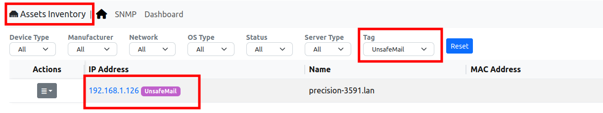

Теги
Теги — это цветные метки, которые можно прикреплять к хостам и использовать для группировки. идентифицировать или аннотировать активы в отслеживаемой сети. Хост может нести один или больше тегов. Они отображаются в виде цветных значков рядом с хостом в пользовательском интерфейсе. и может использоваться для фильтрации того, какие оповещения доставляются для данного уведомления. получатель.
Внутри теги реализованы как 64-битное растровое изображение, связанное с каждым хост, поэтому количество доступных тегов равно:
32 (Биты 0–31) зарезервировано для встроенные теги, который ntopng присваивает автоматически на основе того, что он наблюдает в сети.
32 (Биты 32–63) для определяемые пользователем теги, какие администраторы создавать, называть и назначать вручную.
Оба типа тегов управляются из одного и того же Теги страница, доступная с Раздел настроек системного интерфейса, в котором перечислены все теги вместе. с его названием, цветом и описанием.
Маркировка на основе приложений и рисков
Примечание
Требуется лицензия Enterprise L или выше.
Помимо назначения вручную, определяемый пользователем тег можно привязать к одному или несколько сетевых приложений (т. е. протоколов nDPI) и/или один или несколько потоков риски прямо из диалога редактирования тега. Однажды одно или несколько приложений и/или риски потока связаны с меткой, ntopng начинает маркировку автоматически: каждый раз, когда поток классифицируется как один из связанных приложений или вызывает один из рисков связанных потоков, сам поток немедленно помечается, и один и тот же тег постоянно присваивается локальный клиентский хост потока, точно так же, как если бы он был установлен вручную с этого узла. страница конфигурации хоста. Риски потока работают точно так же, как приложения в все остальные аспекты, описанные ниже.
С этого момента тег ведет себя так же, как и любой другой тег, определяемый пользователем. и виден везде, где обычно появляются теги: в соответствующих потоках в Страницы «Живые потоки» и «Исторические потоки» на клиентском хосте в разделах «Хосты» и «Хосты». На страницах сведений о хосте и, будучи теперь обычным тегом хоста, на соответствующую запись в базе данных активов, поэтому страницу «Активы» можно фильтруется по этому тегу, чтобы перечислить все активы, которые наблюдались с помощью связанное приложение(а).
Это фактически превращает тег в постоянное правило («отмечайте каждый хост, который обсуждает данное приложение»), который обновляется автоматически, а не чем одноразовая ручная аннотация, что делает ее удобным способом создания инвентаризация хостов по поведению, а не по идентичности.
Пример: сетевой администратор хочет определить, какие компьютеры находятся в локальной сети. по-прежнему обращаются к почтовым серверам в виде открытого текста, а не через зашифрованные протоколы, которые поддерживает тот же почтовый сервер – обычно это признак неправильно настроенного или устаревшего почтового клиента.
Из Теги странице выберите один из настраиваемых тегов (например,
Customizable_Tag_62) и щелкните значок редактирования (шестеренка).
Переименуйте его в
UnsafeMail, выберите цвет и в Приложения поле добавитьIMAP,POP3иSMTP, оставив свои зашифрованные аналоги (IMAPS,POPS,SMTPS) вне. Включите ТТЛ и установите его на7дни (см. Срок действия тега актива (TTL)). Сохранять.
Как только любой хост в сети обменивается почтой через один из три протокола открытого текста, ntopng теги как потока, так и клиента хозяин
UnsafeMail- отображается сразу в сведениях о хосте этого хоста. страница.
Откройте Ресурсы странице и отфильтруйте по
UnsafeMailтег, чтобы получить полный, всегда актуальный список неправильно настроенных хостов по всей сети, без необходимости искать их вручную в таблицах потоков.
Затем администратор перенастраивает почтовые клиенты один за другим. Нет дальнейшие действия необходимы в ntopng: благодаря TTL компьютер, который останавливается использование протоколов открытого текста теряет
UnsafeMailотметить около 7 дней после последнего потока почты в виде открытого текста и исчезает из отфильтрованного списка. список сам по себе. Компьютер, который не был отремонтирован (или который был снова неправильно сконфигурирован) сохраняет тег, как и каждый новый поток электронной почты в виде открытого текста. освежает его. Таким образом, на странице отфильтрованных ресурсов всегда отображаются работы. еще предстоит сделать, а не каждый хост, который когда-либо использовал открытый текст почта.Без TTL тег останется на этих ресурсах навсегда, а список мог только расти: администратору пришлось бы удалить тег вручную с каждого фиксированного хоста или не мог отличить фиксированные хосты от тех, еще предстоит исправить.
Срок действия тега актива (TTL)
Примечание
Требуется лицензия Enterprise L или выше.
Инвентаризация активов запоминает хосты, видимые в сети, вместе. с их тегами, спустя долгое время после того, как эти хосты перестали делать то, что заработали им тег. По умолчанию тег остается на активе навсегда: хост, который был DNS сервер год назад или на котором когда-то использовалось устаревшее приложение, до сих пор числится таковым. Это правильное поведение для тегов, используемых в качестве постоянные аннотации, но он создает теги, описывающие поведение меньше и менее точны с течением времени.
ТТЛ (Время жизни) тега показывает, как долго тег сохраняется. актив, когда его уже ничто не подтверждает. Устанавливается в редактировании тега диалог, в днях (от 1 до 365), как для встроенных, так и для пользовательских тегов. Когда TTL отключен (по умолчанию), срок действия тега никогда не истекает.
Чтобы установить одинаковый срок жизни для нескольких тегов одновременно, используйте команду Установить срок жизни кнопка в внизу страницы Теги. TTL устанавливается для всех тегов или, если Все теги отключен, на выбранных.
Тег на активе обновленный каждый раз, когда ntopng появляется новое свидетельство это:
для тегов сервера (DNS Сервер, HTTP Сервер, …), когда хост заметил, что снова предоставляю эту услугу;
для Не соответствует требованиям PQC тег, когда новый не-пост-квантовый поток хост обнаружен;
для тегов операционной системы (см. Теги операционной системы), когда та же операционная система обнаруживается снова, например. когда хост открывает новый TCP соединение;
для тегов, привязанных к приложениям или рискам потока (см. Маркировка на основе приложений и рисков), когда новый соответствующий поток хост обнаружен;
для тегов, назначенных вручную, когда тег назначен. Ничего впоследствии обновляет их, поэтому тег, назначенный вручную с TTL, является временная аннотация, которая удаляется сама (например, «на обслуживании» для в неделю).
Если тег не обновляется дольше, чем его TTL, он удаляется из списка. актив. Например, при TTL 30 дней на DNS Сервер тег, актив, который не был замечен отвечающим на запросы DNS в течение 30 дней, является нет больше не указан как сервер DNS; если он начнется снова, тег вернется. Каждый тег, добавленный к активу или удаленный из него, с указанием его причины записывается в тот журнал активов.
Вещи, которые стоит знать:
Теги назначены, поскольку хост указан в Конфигурация сети (DNS, NTP, DHCP, SMTP, SSH, RDP, PowerShell и FTP серверы, Windows Контроллеры домена, сетевой шлюз) никогда не истекают, пока хост указан там, независимо от TTL. Если хост удаляется из конфигурации, срок действия тега истекает, как и любой другой.
TTL указывается в днях, срок действия периодически проверяется: тег может быть удалено на полдня позже срока жизни, но не раньше.
Срок годности примерно ресурсы, а не хозяева. Для последнего применяются ранее описанные правила.
Тег операционной системы, срок действия которого истекает, удаляется из актива, но Операционная система, указанная для актива, не изменилась. Тег вернулся как только операционная система будет обнаружена снова.
При лицензии ниже Enterprise L TTL недоступен, и теги актива — это просто теги его хоста.